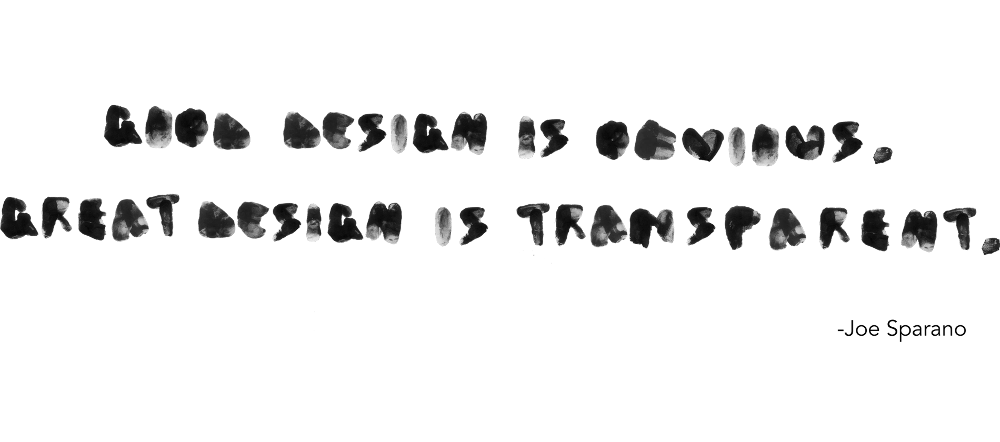

This typeface was created for the purpose of experimenting with new materials and textures doing searches for new ways to communicate and explore. 
First I wet my fingers with ink, making sure that the liquid is not too thick for my fingerprints could be enough noted in the paper.
Then I had to measure the proportion for each character. I wanted to make it equivalent and make it readable at the same time with the texture being noting.
And finally I had to maintain carefully their proportions and likewise played with different shades of degradation depending on the level of ink in each piece.